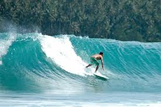

Sejarah dan informasi umum tentang Pulau Nias

Pulau Nias merupakan pulau yang terletak di sebelah barat Pulau Sumatera, Provinsi Sumatera Utara. Pulau ini memiliki sejarah panjang dan budaya yang sangat kaya dengan tradisi yang unik.
Luas pulau ini sekitar 5.120 km² dengan populasi lebih dari 700.000 jiwa. Nias terkenal dengan gelombang surfing-nya yang menjadi favorit para peselancar dunia.
Gunungsitoli sebagai pusat pemerintahan dan perdagangan
Mayoritas Kristen Protestan dengan tradisi yang kuat